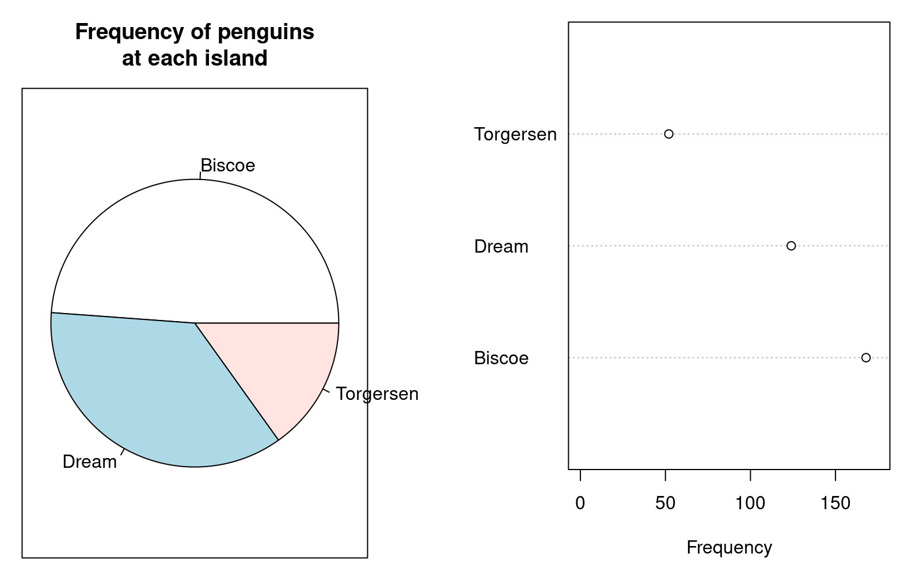
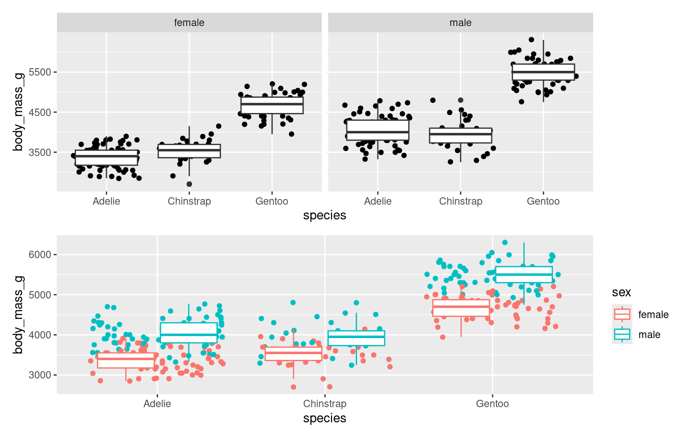
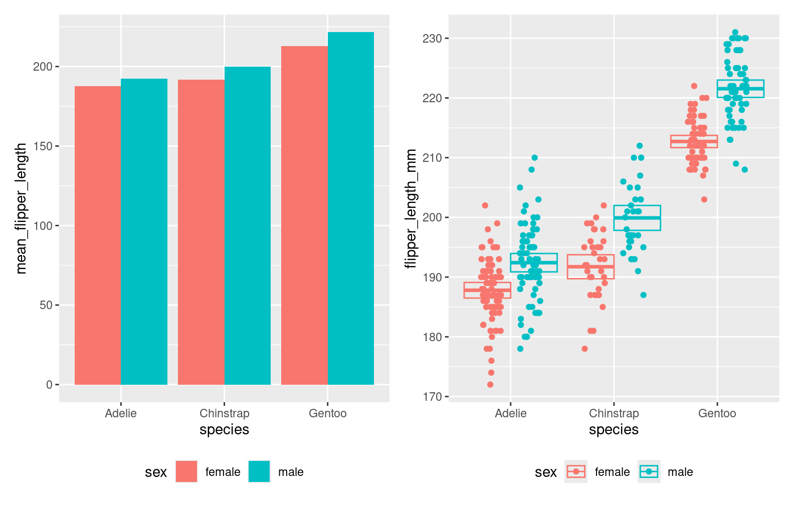
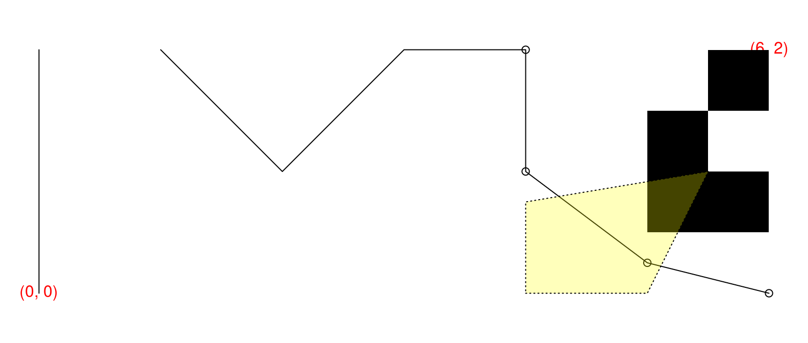
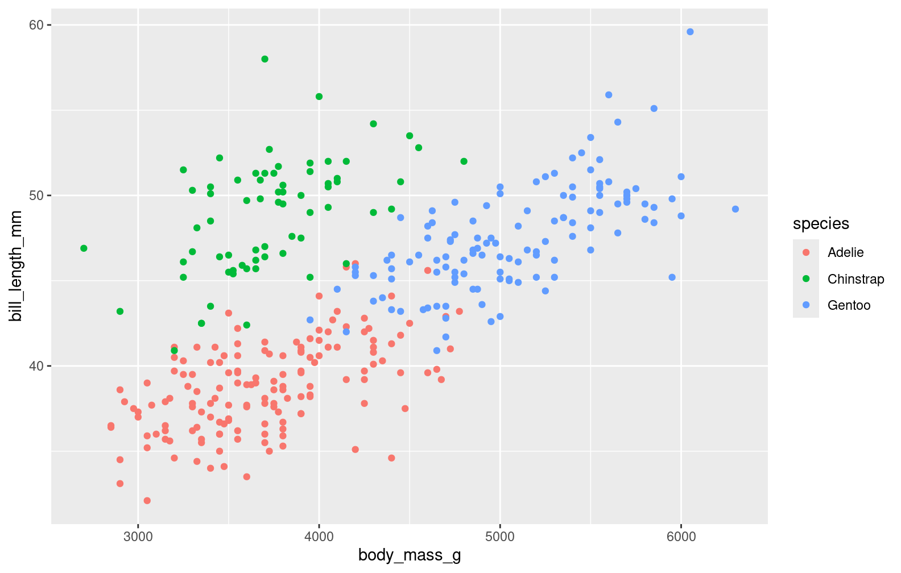
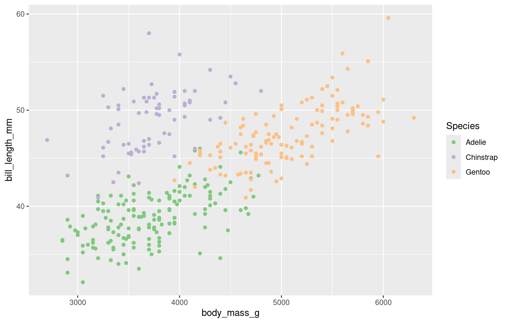

Encode quantitative data as linear lengths or distances. They are easier and more accurate to interpret than angles, area, volume, or color.
Place things that are meant to be compared next to each other.
Show the raw data or some display of uncertainty rather than only summary statistics.
Remove extraneous information, don’t waste ink. Also don’t waste paper with empty space.
Be aware that 5 - 10% of the population is color blind, so choose appropriate color schemes.
Deciding what to plot is often more difficult than making the plot itself
Graphics in R
R has 2 systems for graphics generation:
base graphics
“Just” draws things
Figures are created by overlaying drawings in one or more steps
Includes functions for “standard” statistical graphics
The grid system
A low-level graphics system to create and arrange graphical output
ggplot2 and lattice are built on top of grid
ggplot2 uses a coherent grammar to describe figures, and gets grid to do the drawing
base graphics basics
The primitive types are points, lines, polygons, text, and raster images (aka bitmaps)
These are the basic drawing tools that are combined to create a figure
Graphical parameters are all documented in par. These include things like point shape, line type, color, margins, font, etc.
par(mar=rep(0.5, 4)) # small plot margins (bottom, left, top, right)plot.new() # start a new plotplot.window(c(0, 6), c(0, 2), asp=1) # x range: 0–6, y: 0–2; proportionalx <-c(0, 0, NA, 1, 2, 3, 4, 4, 5, 6)y <-c(0, 2, NA, 2, 1, 2, 2, 1, 0.25, 0)points(x[-(1:6)], y[-(1:6)]) # symbolslines(x, y) # line segmentstext(c(0, 6), c(0, 2), c("(0, 0)", "(6, 2)"), col="red") # two text labelsrasterImage(matrix(c(1, 0, # 2x3 pixel "image"; 0=black, 1=white0, 1,0, 0), byrow=TRUE, ncol=2),5, 0.5, 6, 2, # position: xleft, ybottom, xright, ytopinterpolate=FALSE)polygon(c(4, 5, 5.5, 4), # x coordinates of the verticesc(0, 0, 1, 0.75), # y coordinateslty="dotted", # border stylecol="#ffff0044"# fill colour: semi-transparent yellow)
Colors
You can refer to colors in several ways:
by name, e.g., "red", see colors()
by hex code: "#dd3333"
by specifying them in a color space with one of the functions: rgb, hsv, hcl.
More often, you want to choose a good color palette .
In base graphics, the palette() function is used to view and modify the current color palette.
The default is both ugly, and can be poorly perceived when data are mapped to color values.
Choosing a palette
Use the colorspace package to find a good palette to meet your needs. It uses the Hue Chroma Luminance colorspace
library(colorspace)swatchplot("Hue"=sequential_hcl(5, h =c(0, 300), c =c(60, 60), l =65),"Chroma"=sequential_hcl(5, h =0, c =c(100, 0), l =65, rev =TRUE, power =1),"Luminance"=sequential_hcl(5, h =260, c =c(25, 25), l =c(25, 90), rev =TRUE, power =1),off =0)

You can also use it to simulate color blindness
library(palmerpenguins)par(mfrow =c(1, 2))palette("R3")plot(bill_length_mm ~ body_mass_g, col = island, data = penguins, pch =20, main ="Default palette")legend("bottomright", fill=palette(), legend =levels(penguins$island))palette(deutan(palette()))plot(bill_length_mm ~ body_mass_g, col = island, data = penguins, pch =20, main ="Deuteranope")legend("bottomright", fill=palette(), legend =levels(penguins$island))

ggplot2
GG stands for “Grammar of Graphics”, and this is actually the 2nd iteration of the package. Hadley Wickham started from scratch in 2005 with ggplot2, abandoning the original ggplot1
Grammar of Graphics
Introduced in the eponymous book by Leland Wilkinson, Hadley adapted a bit
Hadley Wickham. A layered grammar of graphics.Journal of Computational and Graphical Statistics, vol. 19, no. 1, pp. 3–28, 2010.
The main idea is to concisely describe a graphic using a set of fundamental rules and concepts
In the background, this also facilitates the creation of the graphic by the software
The building blocks:
Data and aesthetic mappings (ggplot(data, aes(x = x, y = y)))
Geometric objects (e.g., geom_point())
Statistical transformations (e.g., stat_smooth())
Scales
Facets
Coordinate systems
With ggplot2, we describe the building blocks, and combine them to construct a graphic
ggplot2 basics
Start with the data, tidy data
library(ggplot2)head(penguins)
# A tibble: 6 × 8
species island bill_length_mm bill_depth_mm flipper_length_mm body_mass_g
<fct> <fct> <dbl> <dbl> <int> <int>
1 Adelie Torgersen 39.1 18.7 181 3750
2 Adelie Torgersen 39.5 17.4 186 3800
3 Adelie Torgersen 40.3 18 195 3250
4 Adelie Torgersen NA NA NA NA
5 Adelie Torgersen 36.7 19.3 193 3450
6 Adelie Torgersen 39.3 20.6 190 3650
# ℹ 2 more variables: sex <fct>, year <int>
Specify aesthetic mappings, i.e., how variables in the data are associated to visual elements (e.g., x position, y position, color, size, transparency, …)
step1 <-ggplot(penguins, aes(x = body_mass_g, y = bill_length_mm, color = species))step1

Add geometric elements
step2 <- step1 +geom_point()step2
Adjust the scales
plot1 <- step2 +scale_color_brewer("Species", type ="qual")plot1

Notes and details
Layers/components of the plot are distinct functions
Layers are combined with the +
The plot can be saved as an object (what class?)
The plot is displayed/rendered when printed
How does the adding of layers work?
pgeom <-geom_point()class(pgeom)
[1] "LayerInstance" "Layer" "ggproto" "gg"
class(step1)
[1] "gg" "ggplot"
ggplot2:::`+.gg`
function (e1, e2)
{
if (missing(e2)) {
cli::cli_abort(c("Cannot use {.code +} with a single argument",
i = "Did you accidentally put {.code +} on a new line?"))
}
e2name <- deparse(substitute(e2))
if (is.theme(e1))
add_theme(e1, e2, e2name)
else if (is.ggplot(e1))
add_ggplot(e1, e2, e2name)
else if (is.ggproto(e1)) {
cli::cli_abort(c("Cannot add {.cls ggproto} objects together",
i = "Did you forget to add this object to a {.cls ggplot} object?"))
}
}
<bytecode: 0x561964641a38>
<environment: namespace:ggplot2>
Change titles and axis labels with ggtitle(), xlab(), ylab(), limits with xlim(), ylim()
Themes can be adjusted with theme(), changing the appearance of plot elements. The elements are all documented fairly well. There are some nice built-in themes like theme_bw(). Save your theme as an object for reuse.
Annotations can be added with annotate(), but that does not play nicely with facets. Instead use geom_text()
mytheme <-theme(strip.background =element_rect(fill ="steelblue"), text =element_text(family ="Comic sans"), plot.background =element_rect(fill ="grey81"), legend.background =element_rect(fill =NA), legend.position ="bottom") plot2b <- plot2 + mytheme +geom_text(data =data.frame(body_mass_g =3000, bill_length_mm =55, year =2009, sex =NA,label ="Some missing data here"), aes(label = label, color =NULL), hjust =0)plot2b

Tidy data is key
Most plotting problems are actually data problems.
Set up the thing you want to add to the plot in a tidy data frame. Then add the geometric element with the mappings.
plot2 +geom_text(data =data.frame(body_mass_g =3000, bill_length_mm =55, year =2009, sex =NA,label ="Some missing data here"), aes(label = label, color =NULL), hjust =0)

Another example
plot3 <-ggplot(penguins, aes(x = species, y = body_mass_g)) +geom_jitter()plot3
Reordering things
Again, this is a data problem. The order is determined by the levels of the factor
class(penguins$species)
[1] "factor"
levels(as.factor(penguins$species))
[1] "Adelie" "Chinstrap" "Gentoo"
When R converts a character to a factor, and by default the levels are determined by alphabetical order. Change the order using factor() or reorder()
Add solid horizontal lines at the mean and dashed horizontal lines at 95% confidence intervals for the mean
Solution
Step 1: assemble the data
means_and_cis <-split(penguins$body_mass_g, penguins$species) |>lapply(\(bm) { ttestbm <-t.test(bm)data.frame(mean = ttestbm[["estimate"]], lower = ttestbm[["conf.int"]][1], upper = ttestbm[["conf.int"]][2]) })mcidf <-do.call("rbind.data.frame", means_and_cis)mcidf$species <-as.factor(names(means_and_cis))## get the x position with a .45 unit buffermcidf$xmin <-as.numeric(mcidf$species) - .45mcidf$xmax <-as.numeric(mcidf$species) + .45
Step 2: add to the plot using the desired geometric elements